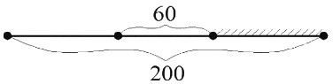
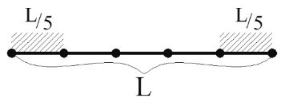
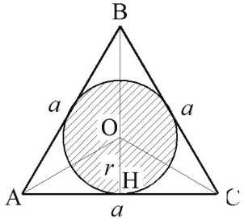
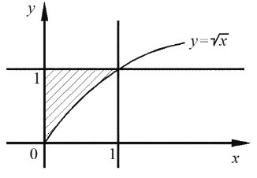

3 ВЕРОЯТНОСТЬ СОБЫТИЯ
Вероятностью события \(A\) называется численная мера степени объективной возможности наступления события
Основные виды вероятности:
1) статистическая вероятность (только после проведения опыта)
2) классическая вероятность (нельзя к испытаниям с бесконечным числом исходов)
3) геометрическая вероятность
3 ВЕРОЯТНОСТЬ СОБЫТИЯ
3.1 СТАТИСТИЧЕСКОЕ ОПРЕДЕЛЕНИЕ ВЕРОЯТНОСТИ
Пусть производится \(n\) одинаковых опытов и пусть в \(m\) из них событие \(A\) произошло
Относительная частота появления события \(A\):
\(W(A)=\frac{m}{n}\)
Если при увеличении числа опытов относительная частота события колеблется около некоторого фиксированного числа, то говорят, что событие \(A\) устойчиво, и это число называют статистической вероятностью события \(A\)
Пример 1
Статистическая вероятность попадания в цель при 75 выстрелах равна 0.6
Сколько было попаданий?
Решение
\(n=75\), \(W(A)=0.6\)
\(m=n⋅W(A)=45\) попаданий
Пример 2
Для пошива школьных форм было заказано 2200 пуговиц
При проверке партии из 500 пуговиц было обнаружено 6 бракованных
Какое наименьшее количество запасных пуговиц необходимо еще заказать, чтобы исключить брак?
Решение
Статистическая частота брака будет составлять \(W(A)=\frac{6}{500}=0.012\)
Тогда среди 2200 пуговиц число бракованных \(m=2200⋅0.012=26.4\)
Округлив это число до наибольшего ближайшего целого, получим 27 пуговиц
3 ВЕРОЯТНОСТЬ СОБЫТИЯ
3.2 КЛАССИЧЕСКОЕ ОПРЕДЕЛЕНИЕ ВЕРОЯТНОСТИ
Вероятностью события \(A\) называется отношение числа благоприятствующих этому событию исходов к общему числу всех равновозможных несовместных элементарных исходов, образующих полную группу:
\(P(A)=p=\frac{m}{n}\)
Свойство 1: вероятность достоверного события, \(P(Ω)=1\)
Свойство 2: вероятность невозможного события, \(P(Ø)=0\)
Свойство 3: вероятность случайного события, \(0 < P(A) < 1\)
Решение задач с использованием определения
Пример 1
Фабрика выпускает насосы
В среднем на 89 качественных насосов приходится 11, имеющие скрытые дефекты
Найти вероятность того, что выбранный в магазине насос окажется с дефектом
Решение
\(P(A)=\frac{11}{89+11}=\frac{11}{100}=0.11\)
Пример 2
Игральная кость бросается один раз
Какова вероятность того, что число очков, выпавших на верхней грани, будет не меньше четырех?
Решение
\(P(A)=\frac{3}{6}=0.5\)
Пример 3
Конференция длится 4 дня
Запланировано 80 докладов: первые два дня по 23 доклада, остальные распределены поровну между третьим и четвертым днями
Какова вероятность того, что доклад профессора окажется запланированным на третий день конференции?
Решение
\(P(A)=\frac{17}{80}=0.2125\)
Решение задач с применением формул комбинаторики
Пример 1
В коробке 5 синих, 4 красных и 3 зеленых карандаша
Наудачу вынимают три карандаша
Какова вероятность того, что:
1) все они одного цвета
2) все они разных цветов
3) среди них 2 синих карандаша и 1 зеленый
Решение
1) \(P(A)=\frac{C_5^3+C_4^3+C_3^3}{C_{12}^3}=\frac{10+4+1}{220}=\frac{15}{220}=\frac{3}{44}\)
2) \(P(A)=\frac{C_5^1⋅C_4^1⋅C_3^1}{C_{12}^3}=\frac{5⋅4⋅3}{220}=\frac{60}{220}=\frac{3}{11}\)
3) \(P(A)=\frac{C_5^2⋅C_3^1}{C_{12}^3}=\frac{10⋅3}{220}=\frac{30}{220}=\frac{3}{12}\)
Пример 2
Дано шесть карточек с буквами Н, М, И, Я, Л, О
Найти вероятность того, что:
1) получится слов ЛОМ, если наугад одна за другой выбрать три карточки и расположить их в порядке появления?
2) получится слово МОЛНИЯ, если наудачу одна за другой выбрать шесть карточек и расположить их в порядке появления?
Решение
1) \(P(A)=\frac{1}{A_6^3}=\frac{1}{120}\)
2) \(P(A)=\frac{1}{P_6}=\frac{1}{6!}=\frac{1}{720}\)
Пример 3
Из букв разрезной азбуки составлено слово СТАТИСТИКА
Найти вероятность того, что, перемешав буквы и укладывая их в ряд по одной, снова получим слово СТАТИСТИКА?
Решение
\(P(A)=\frac{\begin{array}{c}С\\P_2\end{array}⋅\begin{array}{c}Т\\P_3\end{array}⋅\begin{array}{c}А\\P_2\end{array}⋅\begin{array}{c}И\\P_2\end{array}⋅\begin{array}{c}К\\P_1\end{array}}{P_{10}}=\frac{2!⋅3!⋅2!⋅2!⋅1!}{10!}≈0.0000132\)
3 ВЕРОЯТНОСТЬ СОБЫТИЯ
3.3 ГЕОМЕТРИЧЕСКОЕ ОПРЕДЕЛЕНИЕ ВЕРОЯТНОСТИ
Геометрическая вероятность события \(A\) – отношение меры области \(g\), благоприятствующей появлению события \(A\), к мере всей области \(G\) возможных исходов события \(A\):
\(P(A)=\frac{mes \ g}{mes \ G}\)
\(mes\) – мера (длина, площадь, объем)Пример 1
Обедая за столом шириной 2м, вы увидели ползущего с другого конца стола на ваш край таракана
Какова вероятность того, что, доползя до края стола, таракан проползет справа от вас, если вы сидите по центру стола и занимаете вдоль него 60см (таракан – точка)

РешениеИскомая вероятность считается по формуле геометрической вероятности:
\(P(A)=\frac{l}{L}=\frac{\frac{200-60}{2}}{200}=\frac{7}{20}=0.35\)
Пример 2
Стержень длиной \(L\) разламывают на две части в случайной точке
Найти вероятность того, что меньший отрезок имеет длину не более, чем \(\frac{L}{5}\)

Решение\(P(A)=\frac{l}{L}=\frac{\frac{L}{5}+\frac{L}{5}}{L}=\frac{2}{5}\)
Пример 3
Внутрь правильного треугольника наудачу брошена точка
Найти вероятность того, что точка окажется внутри вписанного в треугольник круга

Решение\(P(A)=\frac{S_O}{S_{∆ABC}}=\frac{πr^2}{S_{∆ABC}}\), где \(r=\frac{2S_{∆ABC}}{3a}\) (для равнобедренного)
\(P(A)=\frac{π\left(\frac{2S_{∆ABC}}{3a}\right)^2}{S_{∆ABC}}=\frac{4π}{9}⋅\frac{S_{∆ABC}}{a^2}\)
\(S_{∆ABC}=\frac{1}{2}⋅a^2⋅\sin∠A=\frac{1}{2}⋅a^2⋅\sin60°=\frac{\sqrt{3}}{4}a^2\)
\(P(A)=\frac{4π}{9}⋅\left(\frac{\sqrt{3}}{4}a^2÷a^2\right)=\frac{\sqrt{3π}}{9}≈0.6\)
Пример 4
На плоскости начерчен квадрат, ограниченный осями координат и прямыми \(x=1\) и \(y=1\)
Найти вероятность того, что точка, брошенная наудачу в этот квадрат, попадет в область \(y≥\sqrt{x}\)

Решение\(P(A)=\frac{S_{штрих}}{S_◻}\)
\(S_{штрих}=\int_0^1(1-\sqrt{x})\,dx=x\big|_0^1-\frac{x^{1.5}}{1.5}\big|_0^1=1-\frac{2}{3}=\frac{1}{3}\)
\(S_◻=1⋅1=1\)
\(P(A)=\frac{1}{3}÷1=\frac{1}{3}\)